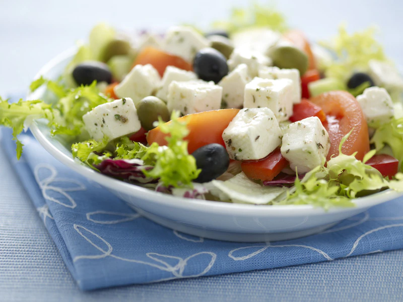

Salatka grecka z serem

Opis
Najsmaczniejsza salatka grecka. Najlepszy przepis na cieple dni.
- sredniej wielkosci glowka salata
- so ssalatkowy grecki knorr
- ser feta
- sredni ogorek
- male pomidory
- zielone oliwki
- czarne oliwki
- mala czerwona papryka
- Przygotuj sos salatkowy grecki knorr wedlug przepisu na opakowaniu
- Pokroj ser w slupki lub kostke i zalej polowa uprzdnio przygotowanego sosu salatkowego knorr
- Porwij salatke, ogorki pokroj w kostke, pomidory w czastki, papryke w kostke
- Dodaj oliwki, wymieszaj z sosem, ktory pozostal. Podawaj z pokrojonym w kostke serem feta